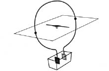
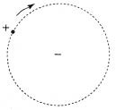

Genel felsefi görüş açımızın uygulanmasındaki ilk önemli güçlüğü dikkate almaya artık hazırız. Bu güçlüğün, başka ve daha önemli bir güçlükle birlikte, bütün görüngülerin mekanik olarak açıklanabileceği inancının tam bir yıkımına yol açacağı daha ileride görülecektir.
Elektriğin bir bilim ve teknik dalı olarak gösterdiği pek büyük gelişim elektrik akımının bulunması ile başladı. Burada, rastlantının bilim tarihinde başlıca rollerden birini oynadığı pek az örnekten biri ile karşılaşıyoruz. Seğiren kurbağa bacağı öyküsü, çeşitli biçimlerde anlatılır. Ayrıntılarla ilgili gerçeklik üzerinde durmazsak, Galvani’nin bir rastlantı sonucu olan buluşunun, 18. yüzyılın sonunda, Volta’nın volta bataryasını yapmasına yol açtığı söz götürmez. Adı geçen bataryanın artık hiçbir pratik önemi yoktur, ama hâlâ, okullardaki uygulamalı öğretimde ve ders kitaplarında akım kaynağının çok basit bir örneği olarak kullanılmaktadır.
Volta bataryasının yapılış ilkesi çok basittir. Her birinde su ve biraz sülfürik asit bulunan birkaç cam kap vardır. Her kapta biri bakırdan ve öbürü çinkodan iki levha, çözeltiye daldırılmıştır. Bir kabın bakır levhası, öbürünün çinko levhasına bağlanmıştır, öyle ki, yalnız iki kabın çinko levhası ile son kabın bakır levhası bağlanmadan kalmıştır. “Öğelerinin” yani cam kaplarla birlikte levhaların sayısı, yeterince çoksa, uygun duyarlıkta bir elektroskop kullanarak, birinci kaptaki bakır ile son kaptaki çinko arasında bir elektrik gerilimi farkı olduğunu gösterebiliriz.
Çok sayıda pilden yapılı bir batarya kullanmamız, yalnızca artık yabancısı olmadığımız elektroskopla kolayca ölçülebilen bir şey elde etmek içindir. Daha sonraki tartışmalarımız için tek pil elverecektir. Bakırın gerilimi çinkonunkinden daha yüksek olur. Burada “daha yüksek”, +2’nin -2’den daha büyük olduğu anlamda kullanılmaktadır. Boştaki bakır levhaya ve çinko levhaya birer iletken bağlanırsa, birincisi artı ve ikincisi eksi olmak üzere, ikisi de elektrikle yüklenir. Bu noktaya değin, özellikle yeni ve şaşırtıcı hiçbir şey yoktur ve elektrik gerilimi konusunda bundan önce geliştirdiğimiz düşüncelerimizi burada da uygulamaya çalışabiliriz. İki iletkeni, birinden öbürüne elektrik akışkanı geçmesini sağlayan bir telle bağlamanın, o iki iletken arasındaki gerilim farkının çabucak ortadan kalkmasını sağladığını görmüştük. Bu olay, sıcaklıkların ısı akımı ile eşitlenmesini andırıyordu. Ama bu, Volta bataryasında da geçerli midir? Volta, bildirisinde, levhaların “... dinmeden işleyen ya da yükün her boşalmadan sonra kendini yenilediği; kısaca, bitmeyen bir yük sağlayan ya da elektrik akışkanının sürekli bir hareketini ya da hareketlendirilmesini gerektiren, zayıf yüklü” iletkenler gibi davrandığını yazıyordu.
Bu deneyin şaşırtıcı sonucu, bakır ve çinko levhalar arasındaki gerilim farkının, birbirine telle bağlı ve yüklü iki iletkende olduğu gibi yitmemesidir. Fark kalır, ve farkın, akışkanlar teorisine göre, daha yüksek gerilim düzeyinden (bakır levhadan) daha alçak gerilim düzeyine (çinko levhaya) değişmeyen bir elektrik akışkanı akıntısına yol açması gerekir. Akışkan teorisini kurtarmak için, değişmeyen bir kuvvetin gerilim farkını yeniden yaratmaya çalıştığını ve elektrik akışkanının akmasına yol açtığını varsayabiliriz. Ama olayın tümü, enerji bakımından şaşırtıcıdır. Akım taşıyan telde, fark edilebilir, ve tel ince ise, teli ergitmeye bile yeten bir ısı niceliği ortaya çıkar. Demek ki, telde ısı enerjisi yaratılmaktadır. Ama volta bataryasının tümü, yalıtılmış bir sistem oluşturur; çünkü dışarıdan hiç enerji sağlanmamaktadır. Enerjinin korunumu yasasını kurtarmak istiyorsak, dönüşümlerin nerede olduğunu ve yaratılan enerjinin karşılığının ne olduğunu bulmalıyız. Bataryada karmaşık kimyasal olaylar geçtiğini, çözeltiye daldırılmış bakır ve çinko gibi, çözeltinin kendisinin de bu olaylara etkin olarak katıldığını anlamak güç değildir. Enerji bakımından, ortaya çıkan dönüşümlerin zinciri şudur: Kimyasal enerji —> akan elektrik akışkanının enerjisi, yani akım —> ısı. Bir volta bataryası sonsuz sürüp gitmez; elektrik akımı ile birlikte ortaya çıkan kimyasal değişmeler, bir süre sonra, bataryayı kullanılmaz duruma getirir.
Mekanikçi ilkelerin uygulanmasına gerçekten büyük güçlükler çıkaran deney, ilk işiten herkesi şaşırtsa gerektir. Bu deneyi, aşağı yukarı yüz yirmi yıl önce, Oersted yaptı. Oersted şöyle der:
“Bu deneyler, mıknatıslı bir iğnenin konumunun, galvanik bir aygıtın yardımı ile ve çok ünlü kimi fizikçilerin birkaç yıl önce göstermeyi boşuna denedikleri gibi galvanik devre açık olunca değil, kapalı olunca değiştiğini kanıtlar görünüyor.”
Bir volta bataryamız ve iletken bir telimiz olduğunu düşününüz. Tel, bakıra bağlanıp çinkoya bağlanmazsa, bir gerilim farkı olacaktır, ama akım olmayacaktır. Teli, merkezine mıknatıslı bir iğne yerleştirilmiş bir çember biçiminde büktüğümüzü, telin de iğnenin de aynı düzlem üzerinde bulunduğunu varsayalım. [Şekil-31] Tel çinko levhaya değmediği sürece, hiçbir şey olmaz. Etkili hiçbir kuvvet yoktur; gerilim farkının varlığı, iğnenin konumunu hiç etkilemez. Oersted’in “çok ünlü” dediği “fizikçilerin” böyle bir etkiyi neden beklediklerini anlamak kolay değildir.

[Şekil-31]
Ama şimdi teli çinko levhaya tutturalım. Birdenbire garip bir şey olur. Mıknatıslı iğne, dönerek ilk konumunu değiştirir. Şimdi, kitabın bu sayfalarının çember düzlemini temsil ettiğini varsayarsak, iğnenin kutuplarından biri okurumuza yönelmiştir. Etki, düzleme dik, magnetik kutbu etkileyen bir kuvvetin etkisidir. Deneyin olguları karşısında, böyle bir sonuç çıkarmaktan pek de kaçınamayız.
Bu deney, önce, görünüşte büsbütün farklı iki görüngü arasında, mıknatıslılık (magnetizma) ile elektrik akımı arasında bir ilişki (relation) olduğunu gösterdiği için ilginçtir. Bununla birlikte, deneyin daha da önemli başka bir yanı vardır. Magnetik kutup ile akımın geçtiği telin küçük parçaları arasındaki kuvvet, tel ile iğneyi birleştiren çizgiler boyunca ya da akan elektrik akışkanı tanecikleri ile asıl magnetik kutup-çiftlerini birleştiren çizgiler boyunca uzanamaz. Kuvvet, bu çizgilere diktir! Bütün olayları dış âleme yormak eğiliminde olduğumuz mekanikçi görüşe göre, ilk olarak büsbütün farklı bir kuvvet ortaya çıkıyor. Newton ve Coulomb yasalarına uyan, gravitation, durgun elektrik ve magnetizma kuvvetlerinin, birbirini iten ya da çeken iki cismi birleştiren doğru boyunca etki gösterdiklerini unutmuyoruz.
Aşağı yukarı altmış yıl önce, Rowland’ın büyük ustalıkla yaptığı bir deney, bu güçlüğü daha da belirginleştirdi. Teknik ayrıntılar bir yana bırakılırsa, bu deney şöyle anlatılabilir: Elektrik yüklü küçük bir küre düşününüz. Daha sonra da, ortasında mıknatıslı bir iğne bulunan çemberin içinde bu kürenin çok hızlı dolandığını düşününüz. [Şekil-32] Bu, aslında, Oersted’inki gibi bir deneydir; tek fark, bayağı elektrik akımı yerine, mekanik olarak sağlanmış bir elektrik yükü hareketinin bulunmasıdır. Rowland, sonucun, çember biçimindeki telde akım bulunduğu zaman gözlenenin gerçekten benzeri olduğunu bulmuştur. Dikey bir kuvvet, mıknatısı saptırmaktadır.

[Şekil-32]
Şimdi elektrik yükünü daha hızlı hareket ettirelim. Bunun sonucu olarak, magnetik kutbu etkileyen kuvvet de artar; iğnenin ilk konumundan sapması daha da belirgin olur. Bu gözlem, bizi önemli bir başka karmaşıklıkla karşı karşıya bırakır. Kuvvet, yük ile mıknatısı birleştiren çizgi üzerinde bulunmamakla kalmamaktadır; üstelik kuvvetin yeğinliği yükün hızına bağlı olmaktadır. Tüm mekanikçi görüş, bütün olayların yalnız uzaklığa bağlı olan ve hıza bağlı olmayan kuvvetlerle açıklanabileceği inancına dayanıyordu. Rowland’ın yaptığı deneyin sonucu, bu inancı kesinlikle sarsmaktadır. Ama biz, tutucu olmakta direnebilir ve eski düşüncelerin sınırları içinde bir çözüme varmaya çalışabiliriz.
Bir teorinin başarılı gelişimi sırasında, bu türlü güçlüklerin, ani ve beklenmedik engellerin ortaya çıkması, bilimde sık sık görülür. Bazen, eski düşüncelerin basit bir genelleştirmesi, hiç değilse geçici olarak, uygun bir çıkar yol gibi görünür. Şimdi söz konusu olan durumda, eski görüş açısını genişletmek ve basit tanecikler arasına daha genel kuvvetler sokmak, yeter sanılabilirdi. Bununla birlikte, eski bir teoriyi onarmak, çoğu zaman olanaksızdır; ve güçlükler, eski teorinin yıkılmasına ve bir yenisinin doğmasına yol açar. Burada ortaya çıkan şey, yalnızca ince bir mıknatıslı iğnenin görünüşte iyi kurulmuş ve başarılı olan mekanikçi teoriyi çökerten davranışı değildir. Teori, büsbütün başka bir yönden gelen çok daha kuvvetli bir saldırıya uğramıştır. Ama bu, başka bir öyküdür ve onu ileride anlatacağız..